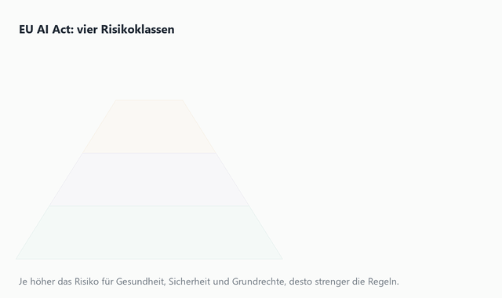
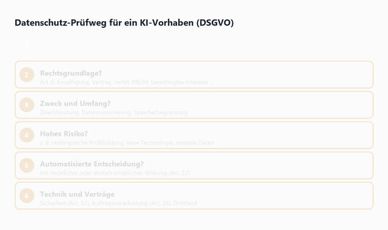
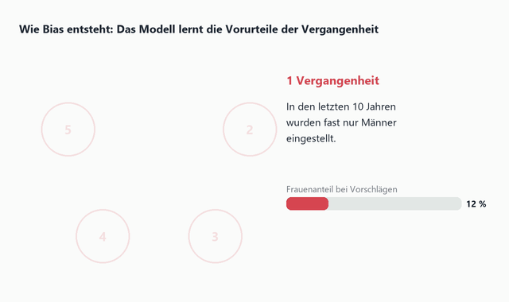
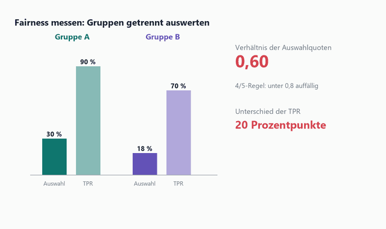
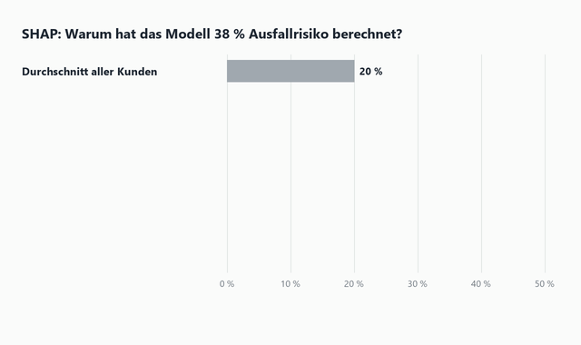
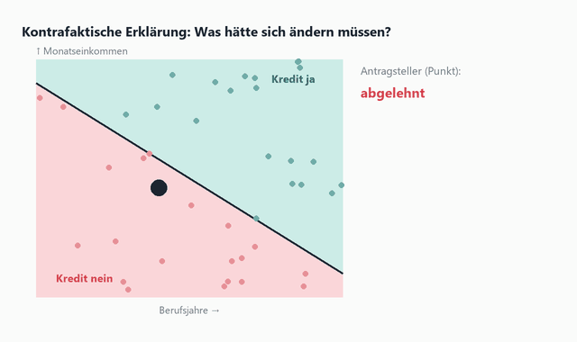

KI verantwortungsvoll einsetzen: EU AI Act, Datenschutz, Fairness und Erklärbarkeit
Eine KI darf nicht alles, was sie kann. In diesem Modul lernen Sie die Regeln des EU AI Act mit seinen Risikoklassen und Pflichten, die Datenschutz-Grundverordnung aus Sicht eines KI-Projekts, wie Diskriminierung durch Algorithmen entsteht und gemessen wird und wie man Entscheidungen von Modellen erklärt. Zum Schluss setzen Sie alles in einer Fallstudie zur Bewerbervorauswahl zusammen.
Dieses Modul vermittelt Prüfungswissen, keine Rechtsberatung. Stand: November 2026. Das „Digital Omnibus“ hat die Fristen für Hochrisiko-Systeme des AI Act verschoben (Anhang III auf den 2. Dezember 2027, Anhang I auf den 2. August 2028). Prüfen Sie vor der Prüfung im Amtsblatt, ob sich weitere Fristen geändert haben.
Der EU AI Act
Der EU AI Act im Überblick
Ein Spielzeug braucht ein CE-Zeichen, ein Auto eine Typzulassung, ein Medikament eine Zulassung – je gefährlicher, desto strenger. Der AI Act überträgt diese Logik auf KI: Nicht die Technik an sich wird reguliert, sondern ihr Einsatz und dessen Risiko.
| Eckdaten | |
|---|---|
| Rechtsakt | Verordnung (EU) 2024/1689 – gilt unmittelbar in allen EU-Staaten |
| In Kraft | 1. August 2024 |
| Ab 2. Februar 2025 | Verbote (Art. 5) und Pflicht zur KI-Kompetenz (Art. 4) |
| Ab 2. August 2025 | Pflichten für KI-Modelle mit allgemeinem Verwendungszweck (GPAI), Sanktionen, Behördenstruktur |
| Ab 2. August 2026 | Großteil der übrigen Regeln, u. a. Transparenzpflichten (Art. 50) |
| Ab 2. Dezember 2027 | Hochrisiko-Systeme nach Anhang III (z. B. Personalauswahl, Kreditwürdigkeit) – ursprünglich 2. August 2026, durch das „Digital Omnibus“ (VO (EU) 2026/1744, 2026 in Kraft getreten) verschoben |
| Ab 2. August 2028 | Hochrisiko-KI als Teil regulierter Produkte (Anhang I, z. B. Medizinprodukte, Maschinen) – ursprünglich 2. August 2027 |
| Rolle | Wer? | Beispiel |
|---|---|---|
| Anbieter (Provider) | entwickelt ein KI-System oder lässt es entwickeln und bringt es unter eigenem Namen in Verkehr oder in Betrieb | Softwarehaus verkauft Bewerber-Screening |
| Betreiber (Deployer) | setzt ein KI-System in eigener Verantwortung beruflich ein | Personalabteilung nutzt das Screening |
| Einführer, Händler | bringen Systeme aus Drittländern in die EU bzw. vertreiben sie | Distributor |
Wer ein gekauftes Hochrisiko-System wesentlich verändert oder unter eigenem Namen anbietet, wird selbst zum Anbieter – mit allen Anbieterpflichten. Und: Auch private Nutzer sind keine „Betreiber“ im Sinne des Gesetzes; es geht um beruflichen Einsatz.
Weitere Beispiele: Anbieter oder Betreiber?
| Situation | Rolle | Begründung |
|---|---|---|
| Ein Softwarehaus entwickelt ein Bewerber-Screening und verkauft es | Anbieter | entwickelt und bringt unter eigenem Namen in Verkehr |
| Ein Logistikunternehmen setzt dieses Screening in der Personalabteilung ein | Betreiber | nutzt beruflich in eigener Verantwortung |
| Eine Agentur nimmt ein fremdes Sprachmodell und bietet es als „Kanzlei-Assistent“ unter eigener Marke an | Anbieter des KI-Systems | eigener Name, eigene Zweckbestimmung |
| Ein Steuerbüro nutzt einen Chat-Assistenten für Entwürfe | Betreiber | berufliche Nutzung eines fremden Systems |
| Ein Student nutzt privat einen Chatbot | keiner von beiden | nicht beruflich |
Ein Versicherer kauft ein Hochrisiko-System zur Schadensbewertung. Seine IT ändert das Modell so, dass es für einen ganz anderen Zweck (Prüfung von Kreditanträgen) eingesetzt wird, und bietet es unter der eigenen Marke an. Damit hat er den Zweck und das System wesentlich verändert und trägt die Anbieterpflichten: Risikomanagement, Dokumentation, Konformitätsbewertung, Registrierung. Betreiber, die Änderungen vornehmen wollen, sollten deshalb vorher klären, ob sie noch im erlaubten Rahmen bleiben.
Dieselbe Technik – ein Sprachmodell – landet je nach Einsatz in verschiedenen Klassen: Als Rechtschreibhilfe im Büro (minimal), als Kundenchat (Transparenzpflicht), als Werkzeug, das Bewerbungen bewertet (hochriskant). Nicht das Modell wird eingestuft, sondern der Einsatzzweck. Deshalb muss jeder Betrieb seine Anwendungen einzeln prüfen.
- Annehmen, „der Anbieter ist verantwortlich, wir als Nutzer nicht“. Betreiber haben eigene Pflichten.
- Das Modell einstufen statt den Einsatz.
- Den AI Act als „Zukunftsthema“ behandeln, obwohl einzelne Regeln (Art. 4, Verbote) schon gelten – die Zeitleiste der Tabelle prüfen.
Frage (5 Punkte): Erklären Sie den Unterschied zwischen Anbieter und Betreiber nach dem AI Act und nennen Sie einen Fall, in dem ein Betreiber zum Anbieter wird.
Musterlösung: Anbieter entwickelt ein KI-System oder lässt es entwickeln und bringt es unter eigenem Namen in Verkehr; Betreiber setzt es in eigener Verantwortung beruflich ein (2 Punkte). Der Betreiber wird zum Anbieter, wenn er ein Hochrisiko-System unter eigenem Namen anbietet oder seinen Zweck bzw. das System wesentlich verändert (2 Punkte). Folge: Anbieterpflichten wie Konformitätsbewertung und Dokumentation (1 Punkt).
AI Act: risikobasiert, gilt unmittelbar, gestaffelt ab 2025 bis 2028 (Hochrisiko-Fristen 2027/2028 nach dem Digital Omnibus). Anbieter entwickelt und bringt in Verkehr, Betreiber setzt beruflich ein.
Die vier Risikoklassen
Ein Taschenmesser darf jeder kaufen, ein Jagdgewehr nur mit Schein, eine Landmine gar nicht. Die Regeln richten sich danach, wie viel Schaden ein Gegenstand anrichten kann.

| Klasse | Beispiele | Folge |
|---|---|---|
| Unannehmbares Risiko (Art. 5) | Social Scoring, manipulative Techniken, Emotionserkennung am Arbeitsplatz und in Bildungseinrichtungen | verboten |
| Hohes Risiko (Art. 6, Anhang I und III) | Personalauswahl und -steuerung, Kreditwürdigkeit, Bildung und Prüfungen, kritische Infrastruktur, Strafverfolgung, Migration, Justiz; Sicherheitsbauteile regulierter Produkte | umfangreiche Pflichten (Lektion 4) |
| Begrenztes Risiko (Art. 50) | Chatbots, Deepfakes, KI-erzeugte Texte zur Information der Öffentlichkeit | Transparenz: Kennzeichnung |
| Minimales Risiko | Spamfilter, KI in Spielen, Lagerprognose | keine besonderen Pflichten; freiwillige Verhaltenskodizes |
- Biometrie (z. B. Fernidentifizierung)
- Kritische Infrastruktur (Wasser, Strom, Verkehr)
- Allgemeine und berufliche Bildung (Zugang, Bewertung, Prüfungsaufsicht)
- Beschäftigung und Personalmanagement (Auswahl, Beförderung, Kündigung, Leistungsbewertung)
- Zugang zu wesentlichen Leistungen (Kreditwürdigkeit, Sozialleistungen, Lebens- und Krankenversicherungstarife, Notrufe)
- Strafverfolgung
- Migration, Asyl, Grenzkontrolle
- Rechtspflege und demokratische Prozesse
Ausnahme: Ein System in diesen Bereichen ist nicht hochriskant, wenn es nur eine eng begrenzte Hilfsaufgabe erfüllt und kein erhebliches Risiko birgt (z. B. Dubletten in Bewerbungen finden) – Profilbildung von Personen bleibt aber immer hochriskant.
Weitere Beispiele: Zehn Einsatzfälle einordnen
| Einsatzfall | Klasse | Begründung |
|---|---|---|
| Prognose des Lagerbestands | minimal | kein Grundrechtsbezug |
| Spamfilter im Mailsystem | minimal | geringe Auswirkung |
| Chatbot im Kundenservice | begrenzt | Transparenz: Nutzer muss erkennen, dass er mit KI spricht |
| KI erzeugt Werbebilder, die echt wirken sollen | begrenzt | Kennzeichnung synthetischer Inhalte |
| Bewerber-Rangliste aus Lebensläufen | hoch | Anhang III: Beschäftigung |
| Kreditwürdigkeitsprüfung bei Privatpersonen | hoch | Anhang III: wesentliche Leistungen |
| Automatische Bewertung von Prüfungsleistungen in einer Schule | hoch | Anhang III: Bildung |
| Steuerung eines Wasserwerks | hoch | Anhang III: kritische Infrastruktur |
| Stimmungsanalyse der Beschäftigten im Callcenter | verboten | Emotionserkennung am Arbeitsplatz (Art. 5) |
| Punktesystem, das Bürger für „gutes Verhalten“ belohnt und sonst benachteiligt | verboten | Social Scoring |
Ein Chatbot beantwortet nicht nur Fragen, sondern bewertet nebenbei die Eignung von Bewerbern und sortiert sie. Er unterliegt dann beiden Regeln: den Transparenzpflichten (Bewerber müssen wissen, dass sie mit einer KI sprechen) und den Hochrisiko-Pflichten (Beschäftigung). Eine Anwendung kann mehrere Pflichten gleichzeitig auslösen; die strengere bestimmt den Aufwand.
Ein System in einem Hochrisiko-Bereich ist nicht hochriskant, wenn es nur eine eng begrenzte Hilfsaufgabe erfüllt, etwa Dubletten in Bewerbungen erkennen oder eine Formatierung prüfen, und das Ergebnis der Entscheidung nicht wesentlich beeinflusst. Sobald es aber Personen bewertet oder Profile bildet, bleibt es hochriskant. Wer sich auf die Ausnahme beruft, muss das begründen und dokumentieren.
- „Wir nutzen nur ein Standardprodukt, das ist bestimmt minimales Risiko.“ Es kommt auf den Einsatz an.
- Ein Chatbot gilt automatisch als hochriskant – er ist meist begrenztes Risiko (Transparenz), außer er trifft Entscheidungen in einem Anhang-III-Bereich.
- Die Einstufung nie dokumentieren. Bei einer Prüfung muss man begründen können, warum man so entschieden hat.
Frage (6 Punkte): Ordnen Sie zu: (a) Lagerprognose, (b) Kundenchat, (c) KI-gestützte Auswahl von Bewerbern, (d) Stimmungserkennung bei Beschäftigten. Nennen Sie jeweils die Folge.
Musterlösung: (a) minimal: keine besonderen Pflichten. (b) begrenzt: Transparenz, Nutzer müssen die KI erkennen. (c) hoch: umfangreiche Pflichten für Anbieter und Betreiber (Aufsicht, Logs, Information). (d) unannehmbar: verboten. Je 1,5 Punkte (Klasse 1, Folge 0,5).
Listen Sie fünf KI-Anwendungen Ihres Betriebs auf (auch eingebaute Funktionen in Standardsoftware) und ordnen Sie jede einer Klasse zu. Spielen Sie dazu den Assistenten oben durch.
Verboten – hoch – begrenzt – minimal. Entscheidend ist der Einsatzzweck, nicht die Technik. Personalauswahl und Kreditwürdigkeit sind typische Hochrisiko-Fälle.
Verbotene KI-Praktiken (Art. 5)
Manche Dinge sind so schädlich, dass man sie nicht mit Auflagen erlaubt, sondern ganz verbietet. Der AI Act zieht diese Grenze bei KI, die Menschen manipuliert, sozial bewertet oder in ihrer Würde verletzt.
| Verbotene Praxis | Beispiel |
|---|---|
| Unterschwellige, manipulative oder täuschende Techniken, die erheblichen Schaden verursachen | App, die Menschen unbemerkt zu schädlichen Käufen drängt |
| Ausnutzen von Schwächen wegen Alter, Behinderung, sozialer Lage | Spielzeug, das Kinder zu gefährlichem Verhalten anstiftet |
| Social Scoring mit Benachteiligung in fremden Zusammenhängen | Punktesystem für „gutes Verhalten“ mit Folgen für Wohnungsvergabe |
| Vorhersage von Straftaten allein aufgrund von Profilbildung | „Kriminalitätsrisiko“ nur aus Persönlichkeitsmerkmalen |
| Ungezieltes Auslesen von Gesichtsbildern aus Internet oder Videoüberwachung | Aufbau einer Gesichtsdatenbank aus Social Media |
| Emotionserkennung am Arbeitsplatz und in Bildungseinrichtungen (außer aus medizinischen oder Sicherheitsgründen) | Stimmungsanalyse von Callcenter-Mitarbeitenden |
| Biometrische Kategorisierung nach sensiblen Merkmalen | Rückschluss auf Religion oder sexuelle Orientierung aus Fotos |
| Biometrische Echtzeit-Fernidentifizierung im öffentlichen Raum zur Strafverfolgung (eng begrenzte Ausnahmen) | flächendeckende Live-Gesichtserkennung |
Weitere Beispiele: Wo die Verbote beginnen
| Fall | Verboten? | Begründung |
|---|---|---|
| Software wertet Stimme und Mimik von Callcenter-Mitarbeitenden aus und meldet „genervt“ | Ja | Emotionserkennung am Arbeitsplatz |
| Therapie-App erkennt Stress bei Patienten, um die Behandlung zu unterstützen | Nein (Ausnahme) | medizinischer Zweck |
| Ein Händler bietet Stammkunden Rabatte nach Kaufhäufigkeit | Nein | Bewertung bleibt im eigenen Zusammenhang, keine Benachteiligung in fremdem Kontext |
| Ein Dienst sammelt ungezielt Fotos aus sozialen Netzwerken und baut eine Gesichtsdatenbank auf | Ja | ungezieltes Auslesen von Gesichtsbildern |
| Ein Spiel drängt Kinder mit versteckten Tricks zu Käufen | Ja | Ausnutzen von Schwächen (Alter), manipulativ |
| Ein System sagt aus Fotos die politische Einstellung voraus | Ja | biometrische Kategorisierung nach sensiblen Merkmalen |
Die Stimmungsanalyse von Kunden im Callcenter (statt der Mitarbeitenden) ist nicht nach Art. 5 verboten, unterliegt aber eigenen Regeln: Emotionserkennung ist als Anwendung regulierungsbedürftig, und die betroffenen Personen müssen darüber informiert werden. Zudem greift die DSGVO. Der Betrieb sollte genau prüfen, wer ausgewertet wird, und im Zweifel verzichten oder rechtlich beraten lassen.
Ein Anbieter von Call-Center-Software bewirbt „Live-Stimmungsanzeige“. Ein Betrieb möchte sie aktivieren. Prüfung: (1) Werden Beschäftigte ausgewertet? Ja. (2) Gilt eine Ausnahme (medizinisch, Sicherheit)? Nein. Ergebnis: Funktion nicht einsetzen. Auch das Mitbestimmungsrecht des Betriebsrats wäre berührt. Merke: Verbotene Funktionen sind durch das Abschalten in der Konfiguration oder Verzicht auf das Modul zu vermeiden – der Betrieb als Betreiber trägt die Verantwortung für den Einsatz.
- Verbote nur bei „großen Überwachungssystemen“ vermuten; auch Funktionen in alltäglicher Software können betroffen sein.
- Die Ausnahmen zu großzügig auslegen („Wir machen es der Sicherheit wegen“) – sie sind eng.
- Verbotene Praktiken mit Hochrisiko verwechseln: Verboten heißt, dass es keine Pflichten-Erfüllung gibt, die es erlaubt.
Frage (5 Punkte): Ihr Betrieb erwägt eine Software, die Beschäftigte per Kamera auf Stimmung (Ärger, Stress, Zufriedenheit) auswertet, um Teams zu „steuern“. Beurteilen Sie den Einsatz und nennen Sie die Höhe der möglichen Strafe.
Musterlösung: Emotionserkennung am Arbeitsplatz gehört zu den verbotenen Praktiken (Art. 5), Ausnahmen für medizinische oder Sicherheitszwecke sind eng und hier nicht erkennbar (3 Punkte). Strafe: bis 35 Mio. € oder 7 % des weltweiten Jahresumsatzes, bei KMU der niedrigere Wert (2 Punkte).
Verboten: Manipulation, Ausnutzen von Schwächen, Social Scoring, Emotionserkennung am Arbeitsplatz und in der Schule, ungezielte Gesichtsdatenbanken und weitere Eingriffe in Grundrechte. Seit 2. Februar 2025.
Pflichten bei Hochrisiko-KI
Ein Aufzughersteller muss Sicherheit nachweisen, dokumentieren, prüfen lassen und regelmäßig warten. Der Hausverwalter, der den Aufzug betreibt, muss ihn bestimmungsgemäß nutzen und Störungen melden. Ganz ähnlich teilen sich Anbieter und Betreiber die Pflichten bei Hochrisiko-KI.
- Risikomanagementsystem über den ganzen Lebenszyklus
- Daten-Governance: geeignete, möglichst fehlerfreie, repräsentative Daten; Bias prüfen
- Technische Dokumentation
- Automatische Protokollierung (Logs)
- Transparenz und Gebrauchsanweisung für Betreiber
- Menschliche Aufsicht ermöglichen
- Genauigkeit, Robustheit, Cybersicherheit
- Qualitätsmanagementsystem
- Konformitätsbewertung, CE-Kennzeichnung, Registrierung in der EU-Datenbank
- Beobachtung nach dem Inverkehrbringen, Meldung schwerer Vorfälle
- Nutzung gemäß Gebrauchsanweisung
- Menschliche Aufsicht durch kompetente, geschulte Personen
- Eingabedaten müssen zum Zweck passen und repräsentativ sein (soweit unter eigener Kontrolle)
- Betrieb überwachen, Risiken und Vorfälle melden
- Logs aufbewahren (mindestens sechs Monate)
- Beschäftigte und ihre Vertretung vor dem Einsatz am Arbeitsplatz informieren
- Betroffene informieren, wenn über sie mit Hochrisiko-KI entschieden wird
- Grundrechte-Folgenabschätzung für öffentliche Stellen und bestimmte private Betreiber (z. B. Kreditwürdigkeit, Versicherung)
Bei „Nennen Sie vier Pflichten“ eignen sich: Risikomanagement, Daten-Governance und Bias-Prüfung, technische Dokumentation und Protokollierung, menschliche Aufsicht, Genauigkeit und Robustheit, Konformitätsbewertung. Bei Betreibern: menschliche Aufsicht, Information der Beschäftigten, Logs aufbewahren, Überwachung.
Weitere Beispiele: Pflichten zuordnen und umsetzen
| Pflicht | Wer? |
|---|---|
| Technische Dokumentation erstellen und CE-Kennzeichnung anbringen | Anbieter |
| Beschäftigte vor dem Einsatz am Arbeitsplatz informieren | Betreiber |
| Risikomanagement über den ganzen Lebenszyklus | Anbieter |
| Automatisch erzeugte Protokolle mindestens sechs Monate aufbewahren | Betreiber (soweit unter seiner Kontrolle) |
| Training und Test mit repräsentativen, möglichst fehlerfreien Daten | Anbieter |
| Menschliche Aufsicht durch geschulte Personen organisieren | Betreiber (Anbieter ermöglicht sie technisch) |
- Liegen Konformitätserklärung, CE-Kennzeichnung und Gebrauchsanweisung vor?
- Welche Daten wurden zum Training genutzt, wurden Bias-Tests durchgeführt (Bericht anfordern)?
- Wie werden Protokolle erzeugt, wie lange und wo gespeichert?
- Wie wird die menschliche Aufsicht technisch unterstützt (Begründung je Bewertung, Möglichkeit zum Übersteuern)?
- Wer im Betrieb beaufsichtigt und wurde dafür geschult?
- Wurden Betriebsrat und Beschäftigte informiert?
Ein Sachbearbeiter soll täglich 200 vom System bewertete Bewerbungen „prüfen“. Bei 8 Stunden Arbeitszeit sind das 480 Minuten : 200 = 2,4 Minuten pro Fall, inklusive aller anderen Aufgaben. Eine sinnvolle Prüfung (Lebenslauf lesen, Begründung des Systems verstehen, abweichen können) ist in dieser Zeit kaum möglich; er wird die Vorschläge meist nur bestätigen. Gute Organisation heißt: realistische Fallzahlen, klare Befugnis zum Abweichen, Schulung, verständliche Begründung der Bewertung.
- Logs nach wenigen Wochen löschen, weil der Speicher knapp wird.
- Die Aufsicht einer Person übertragen, die weder geschult ist noch Entscheidungsbefugnis hat.
- Verlassen auf die CE-Kennzeichnung allein: Der Betreiber muss das System trotzdem überwachen und bestimmungsgemäß einsetzen.
Frage (6 Punkte): Ihr Betrieb will als Betreiber ein Hochrisiko-System einsetzen. Nennen Sie vier Pflichten, die Ihr Betrieb erfüllen muss.
Musterlösung: Nutzung gemäß Gebrauchsanweisung; menschliche Aufsicht durch kompetente, geschulte Personen; Eingabedaten passend zum Zweck; Betrieb überwachen und Vorfälle melden; Logs mindestens sechs Monate aufbewahren; Beschäftigte und ihre Vertretung vorab informieren; Betroffene informieren (je 1,5 Punkte, max. 6).
Hochrisiko: Anbieter weisen Qualität, Daten, Dokumentation, Aufsicht und Konformität nach. Betreiber nutzen bestimmungsgemäß, beaufsichtigen, informieren und protokollieren.
Transparenz, Basismodelle, KI-Kompetenz und Sanktionen
Wer anruft, möchte wissen, ob er mit einem Menschen oder einer Maschine spricht. Wer ein Foto sieht, möchte wissen, ob es echt ist. Transparenzpflichten sorgen dafür, dass Menschen das erfahren.
| Bereich | Kern der Regel |
|---|---|
| Transparenz (Art. 50) | Menschen müssen erkennen, dass sie mit KI interagieren (Chatbot); synthetische Inhalte maschinenlesbar kennzeichnen; Deepfakes offenlegen; KI-Texte zur Information der Öffentlichkeit kennzeichnen (außer bei redaktioneller Kontrolle) |
| GPAI-Modelle (Art. 53, 55) | Anbieter großer Basismodelle: technische Dokumentation, Informationen für nachgelagerte Anbieter, Urheberrechts-Strategie, Zusammenfassung der Trainingsdaten; bei systemischem Risiko zusätzlich Bewertung, Tests, Vorfallmeldungen, Cybersicherheit |
| KI-Kompetenz (Art. 4) | Anbieter und Betreiber sorgen dafür, dass ihr Personal ausreichende KI-Kompetenz hat – seit 2. Februar 2025, für alle Risikoklassen |
| Aufsicht | nationale Marktüberwachungsbehörden (in Deutschland u. a. die Bundesnetzagentur), EU-KI-Büro für GPAI |
| Verstoß (Art. 99) | Höchstbetrag |
|---|---|
| Verbotene Praktiken | 35 Mio. € oder 7 % des weltweiten Jahresumsatzes |
| Andere Pflichten (z. B. Hochrisiko, Transparenz) | 15 Mio. € oder 3 % |
| Falsche Angaben gegenüber Behörden | 7,5 Mio. € oder 1 % |
Für große Unternehmen gilt jeweils der höhere Betrag, für kleine und mittlere Unternehmen sowie Start-ups der niedrigere.
Weitere Beispiele: Transparenz, KI-Kompetenz und Sanktionen
- Chatbot auf der Website: Zu Beginn der Unterhaltung steht deutlich: „Ich bin ein KI-Assistent. Bei Bedarf verbinde ich Sie mit einem Mitarbeiter.“
- KI-erzeugtes Bild in einer Anzeige: Kennzeichnung (z. B. „erstellt mit KI“) und technische Markierung der Datei (Metadaten).
- Deepfake-Video: Offenlegung, dass der Inhalt künstlich erzeugt oder verändert wurde.
- Redaktionell geprüfter Text: Hat ein Mensch den Text geprüft und trägt die Verantwortung, entfällt die Kennzeichnungspflicht für KI-Texte zur Information der Öffentlichkeit.
Ein Konzern mit 2 Mrd. € Jahresumsatz und ein Betrieb mit 20 Mio. € Umsatz begehen jeweils einen Verstoß:
| Verstoß | Konzern (2.000 Mio. €) | KMU (20 Mio. €) |
|---|---|---|
| Verbotene Praxis (35 Mio. € oder 7 %) | 7 % = 140 Mio. € (höherer Wert) | 7 % = 1,4 Mio. € (niedrigerer Wert) |
| Hochrisiko- oder Transparenzpflicht (15 Mio. € oder 3 %) | 3 % = 60 Mio. € | 3 % = 0,6 Mio. € |
| Falsche Angaben an Behörden (7,5 Mio. € oder 1 %) | 1 % = 20 Mio. € | 1 % = 0,2 Mio. € |
Rechnung für den Konzern: 0,07 · 2.000 = 140 Mio. € > 35 Mio. €, also gilt 140 Mio. €. Für das KMU: 0,07 · 20 = 1,4 Mio. € < 35 Mio. €, also gilt der niedrigere Wert. Das sind Obergrenzen; die tatsächliche Höhe hängt von Schwere, Dauer und Verhalten ab.
- Bestandsaufnahme: Wer nutzt welche KI-Werkzeuge?
- Schulung angepasst an die Rolle (Grundlagen für alle, vertieft für Anwender und Verantwortliche), Teilnahme dokumentieren
- Kurze, verständliche Nutzungsregeln (welche Daten dürfen hinein, wie wird geprüft)
- Ansprechperson für Fragen und Vorfälle
Es gibt kein vorgeschriebenes Zertifikat; entscheidend ist, dass das Personal nachweislich ausreichend befähigt ist.
- Glauben, Art. 4 gelte nur für Hochrisiko-Systeme. Er gilt für alle Risikoklassen.
- Die Bußgeldobergrenzen als „feste Strafen“ verstehen.
- KMU-Regel übersehen: Für kleine und mittlere Unternehmen gilt der niedrigere der beiden Werte.
Frage (5 Punkte): Ein Unternehmen mit 500 Mio. € Jahresumsatz (kein KMU) setzt eine verbotene KI-Praxis ein. Berechnen Sie die Obergrenze des Bußgelds.
Musterlösung: 7 % von 500 Mio. € = 35 Mio. €; der feste Betrag beträgt ebenfalls 35 Mio. €. Beide sind gleich, die Obergrenze liegt bei 35 Mio. € (3 Punkte). Bei größerem Umsatz gälte der höhere Wert (bei einem KMU der niedrigere) (2 Punkte).
Chatbots und Deepfakes kennzeichnen. KI-Kompetenz ist Pflicht für alle. Bußgelder bis 35 Mio. € oder 7 % – für KMU der niedrigere Wert.
Datenschutz und Datensicherheit
DSGVO-Grundlagen für KI-Projekte
Ihre Hausärztin darf Ihre Blutwerte nutzen, um Sie zu behandeln – aber nicht, um sie an eine Versicherung zu verkaufen. Daten sind an einen Zweck gebunden. Das ist der Kern der Datenschutz-Grundverordnung.

- Rechtmäßigkeit, Treu und Glauben, Transparenz
- Zweckbindung
- Datenminimierung
- Richtigkeit
- Speicherbegrenzung
- Integrität und Vertraulichkeit
- Rechenschaftspflicht (nachweisen können)
- a) Einwilligung
- b) Vertragserfüllung
- c) rechtliche Verpflichtung
- d) lebenswichtige Interessen
- e) öffentliche Aufgabe
- f) berechtigtes Interesse (mit Abwägung)
Gesundheit, Herkunft, politische Meinung, Religion, Gewerkschaftszugehörigkeit, genetische und biometrische Daten zur Identifizierung, Sexualleben – Verarbeitung grundsätzlich verboten, nur mit engen Ausnahmen (z. B. ausdrückliche Einwilligung). Achtung: Ein Modell kann solche Merkmale auch indirekt erschließen.
Daten, die für die Vertragsabwicklung erhoben wurden, sollen nun ein Modell trainieren? Das ist eine Weiterverarbeitung. Sie ist nur erlaubt, wenn der neue Zweck mit dem alten vereinbar ist oder eine eigene Rechtsgrundlage besteht – sonst anonymisieren oder Einwilligung einholen.
Weitere Beispiele: Datenschutz konkret
| Verarbeitung | Rechtsgrundlage |
|---|---|
| Newsletter mit KI-gestützter Personalisierung | a) Einwilligung |
| Lieferadresse nutzen, um die bestellte Ware zu senden | b) Vertragserfüllung |
| Rechnungen aufbewahren, weil das Steuerrecht es verlangt | c) rechtliche Verpflichtung |
| Betrugserkennung bei Zahlungen, wenn Interessen abgewogen wurden | f) berechtigtes Interesse |
| Notarzt greift auf Gesundheitsdaten eines Bewusstlosen zu | d) lebenswichtige Interessen |
Ein Versandhändler hat Kundendaten für die Abwicklung von Bestellungen erhoben. Nun will er damit ein Empfehlungsmodell trainieren. Prüfung:
- Ist der neue Zweck mit dem alten vereinbar? (Zusammenhang, Erwartung der Kunden, Art der Daten, Folgen, Schutzmaßnahmen)
- Falls ja: mit geeigneten Schutzmaßnahmen (Pseudonymisierung) und Information der Kunden möglich.
- Falls nein oder unsicher: Einwilligung einholen oder die Daten vorher anonymisieren.
Für ein Modell zur Kundenabwanderung stehen 40 Merkmale zur Verfügung. Nach der Analyse tragen 12 den Großteil der Vorhersagekraft bei. Die übrigen 28 – darunter Geburtsdatum, Wohnort und Beruf – werden nicht verwendet. Das ist Datenminimierung: Die Qualität bleibt, das Risiko sinkt. Zur Speicherbegrenzung: Trainingsdaten werden nicht „für alle Fälle“ jahrelang gehalten, sondern nach einer festgelegten Frist gelöscht oder anonymisiert; Löschkonzept und Fristen werden dokumentiert.
Ein Modell, das aus Einkäufen Empfehlungen ableitet, kann bei bestimmten Mustern (z. B. Medikamente, Hilfsmittel) auf Gesundheitszustände schließen, obwohl kein Gesundheitsmerkmal gespeichert ist. Solche Schlüsse können als Verarbeitung besonderer Kategorien zu bewerten sein. Deshalb gilt: nicht nur die gespeicherten Felder, sondern auch die abgeleiteten Informationen betrachten.
- Einwilligung als „Allzweckwaffe“ verstehen. Sie muss freiwillig, informiert und widerrufbar sein; im Arbeitsverhältnis ist sie oft nicht freiwillig.
- „Die Daten haben wir ja schon“ als Begründung für neue Zwecke.
- Rechenschaftspflicht vergessen: Man muss die Einhaltung nachweisen können (Dokumentation).
Frage (6 Punkte): Nennen Sie vier Grundsätze der DSGVO (Art. 5) und erläutern Sie je einen am Beispiel eines KI-Projekts.
Musterlösung: Zweckbindung: Kundendaten aus der Bestellabwicklung dürfen nicht ohne Weiteres für ein Marketing-Modell genutzt werden. Datenminimierung: Nur die für die Vorhersage nötigen Merkmale verwenden. Speicherbegrenzung: Trainingsdaten nach Frist löschen. Integrität und Vertraulichkeit: Zugriffsrechte, Verschlüsselung. (Weitere: Rechtmäßigkeit/Transparenz, Richtigkeit, Rechenschaftspflicht.) Je Grundsatz mit Beispiel 1,5 Punkte.
Personenbezug? → Rechtsgrundlage nach Art. 6 → Zweck, Minimierung, Speicherdauer → besondere Kategorien beachten → alles dokumentieren.
Rechte der Betroffenen und automatisierte Entscheidungen
Ein Computer lehnt Ihren Kredit ab, und niemand kann sagen, warum, und niemand kann es ändern. Die DSGVO will genau das verhindern: Bei wichtigen Entscheidungen muss ein Mensch eingreifen können.
| Recht | Artikel | Bedeutung für KI |
|---|---|---|
| Information | 13, 14 | bei Erhebung über Zweck, Rechtsgrundlage, automatisierte Entscheidungen und die involvierte Logik informieren |
| Auskunft | 15 | welche Daten, zu welchem Zweck; bei automatisierten Entscheidungen aussagekräftige Informationen über die Logik |
| Berichtigung, Löschung | 16, 17 | auch Trainingsdaten betroffen; Löschen aus einem trainierten Modell ist technisch schwierig |
| Widerspruch | 21 | z. B. gegen Profilbildung zu Werbezwecken |
| Keine ausschließlich automatisierte Entscheidung | 22 | siehe unten |
Niemand muss einer ausschließlich automatisierten Entscheidung mit rechtlicher oder ähnlich erheblicher Wirkung unterworfen werden (z. B. Kreditablehnung, Absage einer Bewerbung). Ausnahmen: zur Vertragserfüllung nötig, gesetzlich erlaubt oder ausdrückliche Einwilligung. Dann gelten Schutzmaßnahmen: Recht auf menschliches Eingreifen, eigenen Standpunkt darlegen, Entscheidung anfechten.
Ein Mensch, der Modellvorschläge nur abnickt, macht aus einer automatisierten Entscheidung noch keine menschliche. Die Prüfung muss echt sein: Der Mensch braucht Zeit, Befugnis, Informationen und darf abweichen. Der EuGH hat 2023 entschieden, dass schon ein maßgeblicher Score (z. B. SCHUFA) unter Art. 22 fallen kann.
Weitere Beispiele: Betroffenenrechte und Art. 22 in der Praxis
| Fall | Art. 22? | Begründung |
|---|---|---|
| Online-Kreditantrag wird vollautomatisch abgelehnt | Ja | ausschließlich automatisiert, erhebliche Wirkung |
| Bewerbung wird allein vom Programm aussortiert | Ja | ausschließlich automatisiert, erhebliche Wirkung |
| Shop zeigt individuelle Produktempfehlungen | Nein | keine erhebliche Wirkung |
| Software berechnet einen Score, ein Sachbearbeiter prüft jeden Fall wirklich und entscheidet | Nein | nicht ausschließlich automatisiert |
| Sachbearbeiter bestätigt per Klick, ohne eigene Prüfung | Ja (faktisch) | nur formale menschliche Beteiligung |
Ein abgelehnter Bewerber fragt: „Welche Daten haben Sie über mich, und wie kam die Bewertung zustande?“ Antwort: Zunächst innerhalb von einem Monat (Art. 12 DSGVO; verlängerbar bei Komplexität) die gespeicherten Daten und Zwecke mitteilen und – weil eine automatisierte Bewertung stattfand – aussagekräftige Informationen zur Logik und Tragweite geben, etwa „Bewertet wurden Berufserfahrung, Qualifikationen und Tätigkeitsbeschreibungen; Alter und Geschlecht wurden nicht verwendet.“ Dazu muss der Betrieb vom Anbieter entsprechende Erklärungen erhalten haben.
Ein Kunde verlangt die Löschung seiner Daten. In der Datenbank ist das einfach. Das Modell, das auf seinen Daten trainiert wurde, enthält sie nicht mehr als Tabellenzeile, kann aber Spuren davon in den Gewichten tragen. Mögliche Wege: (1) Daten vor dem Training anonymisieren, sodass keine Löschung nötig ist, (2) Modell regelmäßig mit bereinigten Daten neu trainieren und die alte Version außer Betrieb nehmen, (3) spezielle Verfahren zum „Verlernen“ (noch in Entwicklung). Bei der Planung ist das schon zu bedenken.
- Den Anspruch auf eine Erklärung mit „das Modell ist zu komplex“ ablehnen.
- Menschliche Beteiligung nur auf dem Papier („vier Augen“, aber ohne Zeit und Befugnis).
- Betroffene nicht über den KI-Einsatz informieren, obwohl Art. 13 und 14 das verlangen.
Frage (5 Punkte): Was regelt Art. 22 DSGVO, und wie stellen Sie sicher, dass eine menschliche Prüfung wirksam ist?
Musterlösung: Niemand muss einer ausschließlich automatisierten Entscheidung mit rechtlicher oder ähnlich erheblicher Wirkung unterworfen werden; Ausnahmen (Vertrag, Gesetz, Einwilligung) verlangen Schutzmaßnahmen wie das Recht auf menschliches Eingreifen (3 Punkte). Wirksam wird die Prüfung durch Zeit, Befugnis zum Abweichen, Information und Schulung der prüfenden Person (2 Punkte).
Bei erheblichen Entscheidungen: echte menschliche Prüfung, Recht auf Eingreifen und Erklärung der Logik. Betroffenenrechte gelten auch für Trainingsdaten.
Datenschutz-Folgenabschätzung und Schutztechniken
Vor einem großen Bauvorhaben gibt es ein Gutachten zu den Folgen für die Umwelt. Vor einer riskanten Datenverarbeitung gibt es die Datenschutz-Folgenabschätzung (DSFA).
Bei voraussichtlich hohem Risiko, etwa: systematische, umfassende Bewertung von Personen (Profiling) mit erheblicher Wirkung, umfangreiche Verarbeitung sensibler Daten, systematische Überwachung, neue Technologien. KI-Systeme lösen sie häufig aus.
- Beschreibung der Verarbeitung und Zwecke
- Notwendigkeit und Verhältnismäßigkeit
- Risiken für Betroffene
- Abhilfemaßnahmen
| Technik | Idee | DSGVO noch anwendbar? |
|---|---|---|
| Anonymisierung | Personenbezug dauerhaft entfernen (Aggregation, Generalisierung) | nein – wenn wirklich nicht mehr herstellbar |
| Pseudonymisierung | Name durch Kennung ersetzen, Schlüssel getrennt | ja |
| Datenminimierung | nur nötige Merkmale, kürzere Zeiträume | ja, aber Risiko kleiner |
| Synthetische Daten | künstliche Daten mit ähnlichen Eigenschaften | meist nein, wenn keine Rückschlüsse möglich |
| Differential Privacy | gezieltes Rauschen, damit Einzelne nicht erkennbar sind | senkt das Risiko deutlich |
| Federated Learning | Modell wandert zu den Daten, nur Gewichte werden geteilt | Daten bleiben lokal |
Echte Anonymisierung ist schwer: Postleitzahl + Geburtsdatum + Geschlecht reichen oft, um Menschen wiederzuerkennen. Ein bloßer Hash der E-Mail-Adresse ist Pseudonymisierung, keine Anonymisierung.
Weitere Beispiele: DSFA und Schutztechniken
| Vorhaben | DSFA wahrscheinlich nötig? |
|---|---|
| Bewerber-Screening mit Rangliste | Ja – Profiling mit erheblicher Wirkung |
| Kamera-Auswertung in einem Supermarkt zum Erkennen von Verhaltensmustern | Ja – systematische Überwachung |
| KI-Auswertung von Gesundheitsdaten für Prognosen | Ja – sensible Daten in großem Umfang |
| Interner Chat-Assistent für Texte ohne personenbezogene Daten | Nein, wenn keine Personendaten verarbeitet werden |
Ein Krankenhaus gibt einen Datensatz „ohne Namen“ heraus: Postleitzahl, Geburtsdatum, Geschlecht, Diagnose. Eine bekannte US-Studie hat gezeigt, dass sich mit genau diesen drei Angaben (Postleitzahl, Geburtsdatum, Geschlecht) ein großer Teil der Bevölkerung eindeutig identifizieren lässt. Wer zusätzlich eine öffentliche Wählerliste hat, findet den Namen. Ein Datensatz ist erst dann anonym, wenn die Personen auch mit Zusatzwissen nicht mehr bestimmbar sind. Hilfsmittel: Angaben vergröbern (Jahrgang statt Geburtsdatum, die ersten zwei Ziffern der Postleitzahl), Gruppen mit mindestens k gleichen Datensätzen bilden (k-Anonymität, z. B. k = 5).
- Kundennummer ersetzt Namen, Zuordnungstabelle liegt getrennt: Pseudonymisierung – DSGVO gilt weiter.
- Hash der E-Mail-Adresse: Pseudonymisierung. Wer die Adressen kennt, kann sie hashen und vergleichen; die Person ist wieder auffindbar.
- Aggregierte Statistik „Ø Warenkorb je Region“ mit mindestens 100 Kunden je Region: in der Regel anonym.
Zwei Kliniken trainieren gemeinsam ein Modell, ohne Patientendaten auszutauschen. Klinik A (3.000 Fälle) berechnet für ein Gewicht den Wert 0,40, Klinik B (1.000 Fälle) den Wert 0,50. Die Zentrale mittelt gewichtet nach Datenmenge:
(0,40 · 3.000 + 0,50 · 1.000) : 4.000 = (1.200 + 500) : 4.000 = 0,425
Nur Gewichte wandern, nicht die Daten. Ein Restrisiko bleibt: Auch aus Gewichten lassen sich unter Umständen Rückschlüsse ziehen; deshalb kombiniert man das Verfahren oft mit Differential Privacy.
- Eine DSFA als einmalige Formalität behandeln. Sie ist bei Änderungen zu überarbeiten.
- „Pseudonymisiert“ und „anonym“ gleichsetzen.
- Datenschutz erst nach der Entwicklung prüfen, statt von Anfang an einzubauen (Privacy by Design).
Frage (6 Punkte): Unterscheiden Sie Anonymisierung und Pseudonymisierung und nennen Sie zwei weitere Schutztechniken.
Musterlösung: Anonymisierung entfernt den Personenbezug dauerhaft, die DSGVO gilt dann nicht mehr. Pseudonymisierung ersetzt Identifikatoren (z. B. Name durch Kennung) und hält den Schlüssel getrennt; die Daten bleiben personenbezogen (4 Punkte). Weitere Techniken: Datenminimierung, synthetische Daten, Differential Privacy, Federated Learning (je 1 Punkt, max. 2).
Hohes Risiko → DSFA. Pseudonymisiert bleibt personenbezogen, anonymisiert nicht. Privacy by Design (Art. 25): Datenschutz von Anfang an einbauen.
Datensicherheit, Dienstleister und Beschäftigtendaten
Wer seine Buchhaltung an ein Steuerbüro gibt, bleibt trotzdem verantwortlich und braucht einen Vertrag, der regelt, was das Büro mit den Daten darf. Bei Cloud-KI-Diensten ist es genauso.
| Thema | Kern |
|---|---|
| Sicherheit (Art. 32) | technische und organisatorische Maßnahmen: Zugriffsrechte, Verschlüsselung, Protokollierung, Backups, Tests |
| Auftragsverarbeitung (Art. 28) | Dienstleister verarbeitet nur nach Weisung; schriftlicher Vertrag (AVV) Pflicht |
| Drittlandtransfer (Art. 44 ff.) | Übermittlung außerhalb der EU nur mit Angemessenheitsbeschluss (z. B. EU-US Data Privacy Framework für zertifizierte Firmen), Standardvertragsklauseln o. Ä. |
| Datenpanne (Art. 33, 34) | Meldung an die Aufsichtsbehörde binnen 72 Stunden; bei hohem Risiko auch an Betroffene |
| Beschäftigtendaten | Art. 88 DSGVO mit nationalen Regeln (§ 26 BDSG); strenge Erforderlichkeit |
| Mitbestimmung (§ 87 Abs. 1 Nr. 6 BetrVG) | Einführung technischer Einrichtungen, die Verhalten oder Leistung überwachen können, braucht die Zustimmung des Betriebsrats – auch viele KI-Werkzeuge |
| Bußgelder DSGVO (Art. 83) | bis 20 Mio. € oder 4 % des weltweiten Jahresumsatzes (der höhere Wert) |
- Prompt Injection, Datenabfluss über Antworten (Modul 8)
- Data Poisoning: manipulierte Trainingsdaten
- Modell-Diebstahl, Rückschluss auf Trainingsdaten (Model Inversion)
- Adversarial Examples (Modul 12)
Weitere Beispiele: Sicherheit, Verträge und Mitbestimmung
- Gegenstand, Dauer, Art und Zweck der Verarbeitung sind beschrieben.
- Der Dienstleister verarbeitet nur nach dokumentierter Weisung (kein Training eigener Modelle mit den Daten, wenn nicht vereinbart).
- Vertraulichkeit der Mitarbeitenden, technische und organisatorische Maßnahmen sind festgelegt.
- Unterauftragnehmer (z. B. Cloud-Anbieter) sind benannt und genehmigungspflichtig.
- Rückgabe oder Löschung der Daten nach Vertragsende ist geregelt.
- Kontrollrechte und Unterstützung bei Betroffenenanfragen und Datenpannen sind vereinbart.
Ein Mitarbeiter kopiert eine Kundenliste in einen nicht freigegebenen Chatdienst. Der Datenschutzbeauftragte erfährt davon am Freitag um 16:00 Uhr.
- Frist: 72 Stunden ab Kenntnis, also bis Freitag 16:00 + 3 Tage = Montag 16:00 Uhr – das Wochenende zählt mit.
- Sofort: Schaden begrenzen (Dienst kontaktieren, Löschung verlangen), Vorfall dokumentieren, Risiko bewerten.
- Meldung an die Aufsichtsbehörde, wenn ein Risiko für die Betroffenen nicht ausgeschlossen werden kann; bei hohem Risiko zusätzlich Information der Betroffenen.
- Maßnahmen: Nutzungsregeln, Schulung, freigegebenes Werkzeug anbieten.
Obergrenze: 20 Mio. € oder 4 % des weltweiten Jahresumsatzes, der höhere Wert. Bei 600 Mio. € Umsatz: 0,04 · 600 = 24 Mio. € > 20 Mio. €, also 24 Mio. €. Bei 100 Mio. € Umsatz: 4 Mio. € < 20 Mio. €, es gilt 20 Mio. €.
Achtung: Anders als beim AI Act gilt hier die Regel „der höhere Wert“ unabhängig von der Unternehmensgröße.
Ein Betrieb führt einen KI-Assistenten ein, der aufzeichnet, wer wann welche Anfragen stellt. Der Arbeitgeber versichert, die Daten nicht zur Leistungskontrolle zu verwenden. Nach § 87 Abs. 1 Nr. 6 BetrVG kommt es nicht auf die Absicht an, sondern darauf, ob die Einrichtung dazu geeignet ist, Verhalten oder Leistung zu überwachen. Das ist hier der Fall; der Betriebsrat hat mitzubestimmen. Üblicher Weg: Betriebsvereinbarung mit Regeln zu Zweck, Umfang der Protokolle, Zugriff und Löschfristen.
| Angriff | Beispiel | Gegenmaßnahme |
|---|---|---|
| Data Poisoning | Angreifer schleust manipulierte Beispiele in die Trainingsdaten eines Spamfilters ein | Datenquellen prüfen, Ausreißer und Auffälligkeiten untersuchen, Zugriff beschränken |
| Model Inversion / Extraktion | Wiederholte Abfragen rekonstruieren Merkmale der Trainingsdaten | Abfragen begrenzen, Ausgaben vergröbern, Differential Privacy |
| Prompt Injection | Eingeschleuste Anweisungen in einem Dokument | Minimale Rechte, Eingaben abgrenzen, Freigaben (Modul 8) |
- Die Meldefrist erst ab „Gewissheit über das Ausmaß“ rechnen. Sie läuft ab Kenntnis.
- Einen Dienstleister ohne AVV nutzen, weil „alle das machen“.
- Datenübermittlung in Drittländer nur aufgrund eines Hinweises auf der Website des Anbieters annehmen, ohne Grundlage (Angemessenheitsbeschluss, Standardvertragsklauseln) zu prüfen.
Frage (6 Punkte): Ihr Betrieb möchte einen Cloud-KI-Dienst eines US-Anbieters nutzen, in den Kundendaten eingegeben werden. Nennen Sie vier Punkte, die vorher zu klären sind.
Musterlösung: Auftragsverarbeitungsvertrag (Art. 28); Grundlage für den Drittlandtransfer (Angemessenheitsbeschluss bzw. Zertifizierung nach dem EU-US Data Privacy Framework oder Standardvertragsklauseln); technische und organisatorische Maßnahmen (Art. 32); Rechtsgrundlage und Zweck für die Verarbeitung; Ausschluss der Nutzung der Daten zum Training, wenn nicht gewünscht; ggf. Information des Betriebsrats; Meldeprozess für Datenpannen (je 1,5 Punkte, max. 6).
Lehrreiche Datenschutzfälle und Datenbroker
| Fall | Was ging schief? | Welche Regel hilft? |
|---|---|---|
| Cambridge Analytica (bekannt 2018) | Über eine Persönlichkeitstest-App wurden Daten von sehr vielen Facebook-Nutzern gesammelt, auch von deren Kontakten, und für politische Werbung weiterverwendet. | Zweckbindung, Einwilligung, Datenminimierung |
| Fitness-App mit Bewegungsdaten | Veröffentlichte Laufstrecken verrieten Orte, die geheim bleiben sollten (z. B. Militäranlagen). | Voreinstellungen datenschutzfreundlich wählen (Privacy by Design), Risiko vorher bewerten (DSFA) |
| Patientendaten im Netz | Ungeschützte Server machten Gesundheitsdaten abrufbar. | Art. 32 DSGVO: Zugriffskontrolle, Verschlüsselung; Meldung binnen 72 Stunden |
Datenbroker sammeln Daten aus vielen Quellen, erstellen daraus Verbraucherprofile und verkaufen sie an Werbefirmen oder Einzelhändler. Die Daten stammen oft von Firmen, bei denen man nie selbst Kunde war. Probleme: Betroffene wissen nichts davon, Daten können falsch sein, Profile können zu Benachteiligung führen (z. B. beim Kredit). In der EU gelten dafür Informationspflichten (Art. 13, 14), das Auskunftsrecht (Art. 15), Zweckbindung und Rechtsgrundlagen; ähnliche Geschäftsmodelle sind hier deshalb schwieriger, aber nicht ausgeschlossen. Fragen zur eigenen Absicherung: Von welchem Anbieter stammen die Daten? Liegt eine Rechtsgrundlage vor? Wie können Betroffene Auskunft und Löschung verlangen?
Dienstleister brauchen einen AVV, Drittländer eine Grundlage, Pannen eine Meldung binnen 72 Stunden. KI am Arbeitsplatz: Beschäftigtendatenschutz und Betriebsrat.
Fairness, Erklärbarkeit, Ethik
Algorithmischer Bias: Wie Diskriminierung in Modelle gelangt
Wer nur in einer Stadt Auto fahren gelernt hat, fährt auf dem Land unsicher. Ein Modell, das aus einseitigen Daten gelernt hat, entscheidet einseitig – und es tut das millionenfach und unauffällig.

| Quelle | Beispiel |
|---|---|
| Historischer Bias | vergangene Entscheidungen waren diskriminierend |
| Stichproben-Bias | Gruppen sind in den Daten unterrepräsentiert (Gesichtserkennung bei dunkler Haut) |
| Mess-Bias | Label misst etwas anderes als gemeint („Krankheitskosten“ als Ersatz für „Krankheit“) |
| Stellvertretermerkmale (Proxys) | Postleitzahl oder Vorname verraten Herkunft, obwohl Herkunft entfernt wurde |
| Rückkopplung | Modellentscheidungen erzeugen die Daten fürs nächste Training |
| Einsatz-Bias | Modell wird für andere Menschen oder Zwecke genutzt als vorgesehen |
Das Allgemeine Gleichbehandlungsgesetz (AGG) verbietet Benachteiligung wegen ethnischer Herkunft, Geschlecht, Religion oder Weltanschauung, Behinderung, Alter und sexueller Identität – auch wenn ein Algorithmus sie verursacht. Der AI Act verlangt bei Hochrisiko-Systemen eine Prüfung auf Bias (Daten-Governance).
Das geschützte Merkmal einfach zu löschen reicht nicht („Fairness durch Unwissen“) – Proxys tragen die Information weiter. Man muss die Ergebnisse je Gruppe messen.
Weitere Beispiele: Wie Bias entsteht
| Merkmal im Lebenslauf | Verrät möglicherweise |
|---|---|
| Vorname | Geschlecht, Herkunft |
| Postleitzahl | Herkunft, soziale Lage |
| Lücke im Lebenslauf (Elternzeit) | Geschlecht, Familienstand |
| Teilzeitphasen | Geschlecht, Betreuungspflichten |
| Hobbys, Vereinsmitgliedschaften | Religion, Herkunft, politische Haltung |
| Abschlussjahr / Berufsjahre | Alter |
Das Modell muss das Geschlecht nicht kennen, um nach Geschlecht zu diskriminieren, wenn solche Merkmale es verraten.
Ein Bewerbungsfilter wurde mit Einstellungen der letzten zehn Jahre trainiert, in denen nur 12 % Frauen eingestellt wurden. Das Modell lernt: „Merkmale, die oft bei Frauen vorkommen, sind weniger gut.“ Es lädt weniger Frauen ein, daher werden weniger eingestellt (z. B. 9 %). Wird das Modell mit diesen neuen Daten nachtrainiert, verstärkt sich das Muster weiter (z. B. 6 %). Aus einem historischen Missstand wird ein selbstverstärkender Effekt.
Ein Krankenversicherer will erkennen, welche Patienten intensive Betreuung brauchen. Weil „Gesundheitsbedarf“ schwer zu messen ist, nimmt er die bisherigen Behandlungskosten als Ziel. In einer bekannten US-Untersuchung (2019) zeigte sich bei einem solchen Verfahren: Gruppen, die weniger Zugang zur Versorgung hatten, verursachten weniger Kosten bei gleicher Krankheitslast – das Modell stufte sie als gesünder ein. Das Label „Kosten“ misst etwas anderes als „Bedarf“ (Mess-Bias).
Eine Gesichtserkennung wurde überwiegend mit Fotos hellhäutiger Männer trainiert. In einer bekannten Untersuchung (2018) lag die Fehlerquote bei einigen Systemen für dunkelhäutige Frauen bei bis zu etwa einem Drittel, für hellhäutige Männer unter einem Prozent. Ursache sind weniger Trainingsbeispiele und schlechtere Qualität dieser Gruppe in den Daten.
- Annehmen, ein Algorithmus sei „neutral, weil er rechnet“. Er übernimmt die Muster der Daten.
- Nur auf das Modell schauen und die Datenerhebung und Zielgröße nicht hinterfragen.
- Das Modell in einem neuen Kontext einsetzen (andere Region, andere Bevölkerung) und nicht neu prüfen (Einsatz-Bias).
Frage (5 Punkte): Ein Betrieb entfernt aus den Bewerberdaten Geschlecht und Herkunft. Warum kann das Modell trotzdem diskriminieren, und was ist zu tun?
Musterlösung: Andere Merkmale (Vorname, Postleitzahl, Lücken im Lebenslauf, Hobbys) wirken als Stellvertreter (Proxys) und tragen die Information weiter; auch historische Daten können diskriminierend sein (3 Punkte). Maßnahmen: Ergebnisse je Gruppe messen (Fairness-Kennzahlen), Proxys prüfen, Daten und Ziel hinterfragen, menschliche Kontrolle (2 Punkte).
Bias entsteht aus historischen, unvollständigen oder falsch gemessenen Daten, aus Proxys und Rückkopplung. Merkmal löschen genügt nicht – messen!
Fairness messen
Ob eine Prüfung fair war, sieht man nicht an der Durchschnittsnote, sondern daran, wie verschiedene Gruppen abgeschnitten haben. Genauso misst man Fairness bei Modellen: getrennt nach Gruppen.

| Kennzahl | Frage | Gleich soll sein |
|---|---|---|
| Demographic Parity | Werden alle Gruppen gleich oft ausgewählt? | Auswahlquote |
| Disparate-Impact-Verhältnis (4/5-Regel) | Auswahlquote der benachteiligten : der bevorzugten Gruppe | mindestens 0,8 (Faustregel aus den USA) |
| Equal Opportunity | Werden geeignete Personen jeder Gruppe gleich gut erkannt? | Richtig-Positiv-Rate (Recall) |
| Equalized Odds | wie oben und gleiche Fehlalarme | Richtig- und Falsch-Positiv-Rate |
| Kalibrierung je Gruppe | Bedeutet „70 %“ für alle Gruppen dasselbe? | tatsächliche Quote je Score |
Rechenweg: Bewerbervorauswahl
Gruppe A: 200 Bewerbungen, 60 eingeladen. Gruppe B: 150 Bewerbungen, 27 eingeladen.
- Auswahlquote A = 60/200 = 30 % · B = 27/150 = 18 %
- Verhältnis = 18 % / 30 % = 0,6 → unter 0,8: Hinweis auf Benachteiligung – prüfen!
Die Kennzahlen können sich widersprechen – man kann (bei unterschiedlichen Grundraten) nicht alle gleichzeitig erfüllen. Welche Fairness gelten soll, ist eine fachliche, rechtliche und ethische Entscheidung, die dokumentiert werden muss.
Weitere Beispiele: Fairness-Kennzahlen berechnen
Gruppe A: 400 Bewerbungen, davon 110 ausgewählt. Gruppe B: 250 Bewerbungen, davon 55 ausgewählt.
- Quote A: 110 : 400 = 27,5 % · Quote B: 55 : 250 = 22 %
- Verhältnis: 22 : 27,5 = 0,80 → genau an der Grenze der 4/5-Regel
Die Faustregel verlangt mindestens 0,8; bei exakt 0,8 ist sie gerade erfüllt, jede weitere Verschiebung zu Lasten von B wäre ein Warnsignal.
Zahlen aus Beispiel 1, jetzt mit Eignung: In Gruppe A sind 100 Personen geeignet, das System wählt davon 80 aus. In Gruppe B sind 60 geeignet, das System wählt davon 36 aus.
- Richtig-Positiv-Rate A: 80 : 100 = 80 %
- Richtig-Positiv-Rate B: 36 : 60 = 60 %
- Unterschied: 20 Prozentpunkte – geeignete Personen aus Gruppe B werden deutlich seltener erkannt.
Das System verletzt hier Equal Opportunity, obwohl die Auswahlquote nach der 4/5-Regel noch gerade genügt. Wer nur eine Kennzahl prüft, übersieht solche Fälle.
In Gruppe A sind 50 % der Bewerber geeignet, in Gruppe B 30 %. Ein perfektes System, das genau die Geeigneten auswählt, hätte bei je 1.000 Bewerbungen die Auswahlquoten 50 % und 30 %. Das Verhältnis ist 30 : 50 = 0,6 – die 4/5-Regel wäre verletzt, obwohl kein einziger Fehler gemacht wurde. Soll man die Auswahlquoten angleichen, muss man Geeignete ablehnen oder Ungeeignete einladen. Welche Fairness angemessen ist, entscheiden Fachbereich, Recht und Ethik gemeinsam – und dokumentieren es.
Beim Kreditscoring gilt für Gruppe A eine Falsch-Positiv-Rate von 10 %, für Gruppe B von 18 % (ungerechtfertigte Ablehnungen von Zahlungsfähigen werden hier als Fehlalarme betrachtet). Der Unterschied von 8 Prozentpunkten zeigt, dass Gruppe B häufiger zu Unrecht abgelehnt wird – Equalized Odds wäre nicht erfüllt, selbst wenn die Treffsicherheit insgesamt gleich ist.
- Das Verhältnis falsch herum bilden (bevorzugte durch benachteiligte Gruppe); es wird immer die kleinere durch die größere Quote geteilt.
- Fairness mit Gleichbehandlung verwechseln: Gleiche Regeln können ungleiche Wirkung haben.
- Gruppen mit sehr wenigen Fällen mit großen Gruppen vergleichen, ohne die Unsicherheit zu bedenken.
Frage (6 Punkte): Gruppe A: 300 Bewerbungen, 90 eingeladen. Gruppe B: 200 Bewerbungen, 42 eingeladen. Berechnen Sie die Auswahlquoten und das Verhältnis und bewerten Sie es.
Musterlösung: Quote A = 90 : 300 = 30 %; Quote B = 42 : 200 = 21 % (2 Punkte). Verhältnis = 21 : 30 = 0,70 (2 Punkte). Unter 0,8: Hinweis auf Benachteiligung von Gruppe B; Ursachen prüfen (Daten, Proxys, Schwellen), Maßnahmen und Dokumentation (2 Punkte).
Fairness getrennt nach Gruppen messen: Auswahlquote (4/5-Regel), Richtig-Positiv-Rate, Fehlalarme. Welche Kennzahl gilt, wird bewusst entschieden und dokumentiert.
Erklärbare KI (XAI)
„Weil ich es so sage“ akzeptiert niemand als Begründung. Wer eine Entscheidung trifft, die andere betrifft, muss sie erklären können – auch wenn eine Maschine sie vorbereitet hat.

| Methode | Art | Antwort auf |
|---|---|---|
| Von Natur aus erklärbare Modelle | lineare Modelle, flache Bäume | Gewichte bzw. Regeln direkt lesbar |
| Feature Importance / Permutation Importance | global | Welche Merkmale sind insgesamt wichtig? |
| Partial Dependence Plot | global | Wie ändert sich die Vorhersage mit einem Merkmal? |
| SHAP | lokal (und global) | Beitrag jedes Merkmals zu dieser Vorhersage – auf Basis der Shapley-Werte aus der Spieltheorie |
| LIME | lokal | einfaches Ersatzmodell um den einzelnen Fall |
| Kontrafaktische Erklärung | lokal | Was hätte anders sein müssen? |
| Grad-CAM / Heatmaps | lokal, Bilder | Welche Bildbereiche waren entscheidend? |

- Betroffene: verständlich, handlungsleitend (kontrafaktisch, wichtigste Gründe)
- Fachanwender: Plausibilität prüfen (SHAP je Fall)
- Entwickler: Fehler finden, Leakage entdecken (Feature Importance)
- Aufsicht, Prüfer: Dokumentation, globale Zusammenhänge
Weitere Beispiele: Entscheidungen erklären
Ein logistisches Modell für das Ausfallrisiko hat für „Zahl der Zahlungsverzüge“ den Koeffizienten 0,7. Das bedeutet: Mit jedem zusätzlichen Verzug wird das Chancenverhältnis (Odds) mit e0,7 ≈ 2,0 multipliziert, sich also etwa verdoppelt. Solche Modelle sind von Natur aus erklärbar: Man kann jedem Merkmal einen Einfluss zuordnen, ohne weitere Werkzeuge.
Das durchschnittliche Ausfallrisiko aller Kunden liegt bei 10 %. Für einen Kunden tragen die Merkmale bei:
| Merkmal | Beitrag (Prozentpunkte) |
|---|---|
| Schuldenquote hoch | +12 |
| Zahlungsausfälle in der Vergangenheit | +6 |
| Einkommen überdurchschnittlich | −3 |
| Beschäftigung seit 6 Jahren | −2 |
Summe: 10 + 12 + 6 − 3 − 2 = 23 %. Die Beiträge ergeben zusammen genau die Vorhersage – das ist die Grundidee von SHAP. Der Sachbearbeiter sieht sofort, dass Schuldenquote und frühere Ausfälle den Ausschlag geben.
Ein Kreditantrag über 8.000 € wird abgelehnt. Die kontrafaktische Aussage lautet: „Bei einer Kreditsumme von 5.000 € oder einem um 300 € höheren monatlichen Einkommen wäre der Antrag bewilligt worden.“ Das ist für Betroffene verständlicher und handlungsleitender als eine Liste von Gewichten. Wichtig: Nur Merkmale vorschlagen, die man ändern kann, und keine, die diskriminierend wirken (z. B. „wenn Sie jünger wären“).
| Adressat | Frage | Geeignete Methode |
|---|---|---|
| Abgelehnter Antragsteller | „Was kann ich ändern?“ | kontrafaktische Erklärung, wichtigste Gründe in einfacher Sprache |
| Sachbearbeiter | „Ist die Bewertung plausibel?“ | SHAP je Fall |
| Data Scientist | „Lernt das Modell etwas Unsinniges?“ | Feature Importance, Partial Dependence |
| Aufsicht | „Welche Faktoren bestimmen Entscheidungen insgesamt?“ | globale Erklärung und Dokumentation |
- Eine Erklärung mit der Wahrheit gleichsetzen: SHAP und LIME erklären, was das Modell tut – nicht, ob der Zusammenhang in der Welt kausal ist.
- Alle Adressaten mit derselben technischen Erklärung bedienen.
- Feature Importance als Beweis für Ursachen lesen („Postleitzahl ist wichtig, also verursacht der Wohnort Ausfälle“).
Frage (5 Punkte): Der durchschnittliche Wert beträgt 20 %. SHAP-Beiträge: +15, +8, −5, −4, +4. Berechnen Sie die Vorhersage und erklären Sie den Unterschied zwischen lokaler und globaler Erklärung.
Musterlösung: 20 + 15 + 8 − 5 − 4 + 4 = 38 % (2 Punkte). Lokal: erklärt eine einzelne Vorhersage („Warum diese Entscheidung?“, z. B. SHAP, LIME); global: erklärt das Modellverhalten insgesamt („Was zählt insgesamt?“, z. B. Feature Importance) (3 Punkte).
Global: Was zählt insgesamt? Lokal: Warum dieser Fall? SHAP verteilt die Vorhersage auf die Merkmale, kontrafaktische Erklärungen zeigen den Weg zu einem anderen Ergebnis.
Ethische Leitlinien und menschliche Aufsicht
Nicht alles, was erlaubt ist, ist auch richtig. Ethik fragt: Sollten wir das tun – und wie, damit Menschen gut damit leben können?
| EU-Leitlinien für vertrauenswürdige KI (2019) – sieben Anforderungen |
|---|
| 1. Vorrang menschlichen Handelns und menschliche Aufsicht |
| 2. Technische Robustheit und Sicherheit |
| 3. Schutz der Privatsphäre und Datenqualitätsmanagement |
| 4. Transparenz |
| 5. Vielfalt, Nichtdiskriminierung und Fairness |
| 6. Gesellschaftliches und ökologisches Wohlergehen |
| 7. Rechenschaftspflicht |
- Human in the Loop: Mensch entscheidet jeden Fall, KI schlägt vor
- Human on the Loop: KI entscheidet, Mensch überwacht und kann eingreifen
- Human in Command: Mensch bestimmt, ob und wie KI eingesetzt wird
Menschen neigen dazu, Maschinenvorschlägen zu sehr zu vertrauen – besonders unter Zeitdruck. Wirksame Aufsicht braucht Schulung, Zeit, Befugnis, verständliche Erklärungen und eine Kultur, in der Abweichen erlaubt ist.
Energieverbrauch großer Modelle, Arbeitsplatzwandel und Weiterbildung, Abhängigkeit von wenigen Anbietern, Urheberrechte der Menschen, deren Werke zum Training dienten, Missbrauch durch Deepfakes.
Weitere Beispiele: Aufsicht und Verantwortung im Alltag
| Anwendung | Form | Begründung |
|---|---|---|
| Kreditentscheidung über Privatpersonen | Human in the Loop | erhebliche Wirkung: Mensch entscheidet jeden Fall |
| Spamfilter im Mailsystem | Human on the Loop (oder kaum Aufsicht) | geringe Wirkung; Stichproben und Eingriffsmöglichkeit genügen |
| Autonomes Lager-Fahrzeug | Human on the Loop | System agiert, Mensch überwacht und kann stoppen |
| Entscheidung, ob und wo KI im Betrieb eingesetzt wird | Human in Command | Mensch bestimmt Einsatz, Grenzen und Abschaltung |
Ein Prüfer bestätigt 98 % der Vorschläge eines Systems. Das kann bedeuten, dass das System sehr gut ist – oder dass er nicht wirklich prüft. Methode: In die Fälle werden gezielt 20 absichtlich falsche Vorschläge eingestreut („Testfälle“). Erkennt der Prüfer davon nur 9, liegt die Erkennungsrate bei 9 : 20 = 45 % – die Aufsicht ist nicht wirksam. Gegenmaßnahmen: weniger Fälle pro Person, Begründungen anzeigen, Schulung, Abweichung ausdrücklich erwünscht, Stichproben durch eine zweite Person.
- Menschliche Aufsicht: Übergabe an Mitarbeitende jederzeit möglich.
- Robustheit: Test mit Tippfehlern, Dialekt, absichtlichen Täuschungsversuchen.
- Privatsphäre: keine unnötigen Daten, Löschfristen.
- Transparenz: Kennzeichnung als KI, Hinweis auf Grenzen.
- Fairness: gleiche Qualität für alle Sprachen und Kundengruppen prüfen.
- Gesellschaftliches Wohlergehen: Weiterbildung der Beschäftigten, keine Verdrängung ohne Plan.
- Rechenschaft: klare Verantwortliche, Protokolle, Beschwerdeweg.
- Ethik als „Reden über Werte“ ohne konkrete Maßnahmen und Verantwortliche verstehen.
- Menschliche Aufsicht auf den Nothalt reduzieren.
- Aufsicht ohne Befugnis: Wer das System nicht übersteuern darf, beaufsichtigt es nicht.
Frage (6 Punkte): Erklären Sie Automation Bias und nennen Sie drei Maßnahmen, um die menschliche Aufsicht wirksam zu machen.
Musterlösung: Automation Bias ist die Neigung, Vorschlägen einer Maschine zu stark zu vertrauen, besonders unter Zeitdruck (2 Punkte). Maßnahmen: ausreichend Zeit und realistische Fallzahlen, Befugnis zum Abweichen, Schulung, verständliche Begründungen, Testfälle und Stichproben, Fehlerkultur (je 1,33 Punkte, max. 4).
Vertrauenswürdige KI: menschliche Aufsicht, Robustheit, Datenschutz, Transparenz, Fairness, Gemeinwohl, Rechenschaft. Achtung vor Automation Bias.
Alles zusammen
Fallstudie: KI in der Bewerbervorauswahl
Ein Logistikunternehmen mit 1.200 Beschäftigten erhält 15.000 Bewerbungen im Jahr. Es möchte eine gekaufte Software einsetzen, die Lebensläufe bewertet und eine Rangliste erstellt. Die Personalabteilung lädt dann die oberen 20 % ein.
- AI Act: Beschäftigung (Anhang III Nr. 4) → Hochrisiko. Das Unternehmen ist Betreiber: Software nur gemäß Anleitung, geschulte menschliche Aufsicht, Logs mindestens sechs Monate, Beschäftigte und Betriebsrat vorab informieren, Betrieb überwachen. Vom Anbieter verlangen: Konformitätserklärung, CE, Gebrauchsanweisung, Angaben zu Daten und Bias-Tests.
- DSGVO: Rechtsgrundlage Bewerbungsverfahren (Beschäftigtendatenschutz); Information der Bewerber über den KI-Einsatz und die Logik; Art. 22: Absagen nicht allein durch die Software – echte menschliche Prüfung; DSFA wegen Profiling; AVV mit dem Anbieter; Speicherfristen.
- AGG: Fairness-Messung je Geschlecht, Alter, Herkunft (soweit rechtlich zulässig erhebbar oder über Stichproben); 4/5-Regel als Warnsignal; Proxys prüfen.
- Betriebsrat: Mitbestimmung (§ 87 Abs. 1 Nr. 6 und § 95 BetrVG – Auswahlrichtlinien); Betriebsvereinbarung.
- Erklärbarkeit: Für jede Bewerbung die wichtigsten Gründe der Bewertung anzeigen; Rückfragen von Bewerbern beantworten können.
- Betrieb: Pilot in einem Bereich, Vergleich mit menschlicher Auswahl, regelmäßige Fairness-Berichte, Abbruchkriterien.
Risikoklasse und Rolle → Pflichten nach AI Act → DSGVO (Rechtsgrundlage, Information, Art. 22, DSFA, AVV) → Diskriminierungsschutz (AGG, Fairness-Messung) → Mitbestimmung → Erklärbarkeit → Einführung und Überwachung.
Weitere Beispiele zur Fallstudie: Zahlen und Rollenspiel
15.000 Bewerbungen, die oberen 20 % werden eingeladen: 15.000 · 0,20 = 3.000. Die übrigen 15.000 − 3.000 = 12.000 Bewerbungen würden ohne weiteres Zutun abgelehnt – ohne dass je ein Mensch sie gesehen hat. Das ist eine ausschließlich automatisierte Entscheidung mit erheblicher Wirkung (Art. 22 DSGVO). Lösung: Ein Mensch prüft die Ablehnungen nicht vollständig, aber wirksam – z. B. alle Fälle knapp unter der Grenze und eine zufällige Stichprobe von 5 % aller Ablehnungen (12.000 · 0,05 = 600); Bewerber können eine menschliche Überprüfung verlangen.
Von 15.000 Bewerbungen kommen 4.500 von Frauen und 10.500 von Männern. Eingeladen werden 690 Frauen und 2.310 Männer.
- Quote Frauen: 690 : 4.500 = 15,3 % · Quote Männer: 2.310 : 10.500 = 22 %
- Verhältnis: 15,3 : 22 ≈ 0,70 → unter 0,8, Warnsignal
Nächste Schritte: Proxys suchen (Lücken im Lebenslauf, Teilzeit), Gewichtung der Merkmale prüfen (Erklärbarkeit), Trainingsdaten untersuchen, ggf. Anbieter zur Nachbesserung verpflichten oder den Einsatz stoppen. Das Ergebnis wird dokumentiert.
| Rolle | Zentrale Forderung |
|---|---|
| Personalleitung | Entlastung bei 15.000 Bewerbungen, schnellere Antworten |
| Datenschutzbeauftragte/r | Rechtsgrundlage, Information der Bewerber, DSFA, Auftragsverarbeitungsvertrag, Art. 22 |
| Betriebsrat | Mitbestimmung, Betriebsvereinbarung, Auswahlrichtlinien, Schutz vor Leistungskontrolle |
| Anbieter | Nachweise: Konformität, Bias-Tests, Gebrauchsanweisung, Logs |
| Geschäftsleitung | Kosten-Nutzen, rechtssichere Einführung, Reputation |
- Nur ein Regelwerk prüfen (z. B. nur DSGVO) und AI Act, AGG und Mitbestimmung vergessen.
- Die Absagen „zur Entlastung“ automatisieren und Art. 22 übersehen.
- Keine Abbruchkriterien für den Pilot festlegen (z. B. Fairness-Verhältnis unter 0,8).
Frage (10 Punkte): Ihr Betrieb will ein gekauftes System zur Vorauswahl von Bewerbungen einführen. Prüfen Sie die rechtlichen Anforderungen.
Musterlösung: AI Act: Hochrisiko (Beschäftigung), Betreiberpflichten (Aufsicht, Logs, Information, Überwachung) (2 Punkte). DSGVO: Rechtsgrundlage, Information, Art. 22 (echte menschliche Prüfung der Absagen), DSFA, AVV (3 Punkte). AGG/Fairness: Messung je Gruppe, Proxys prüfen, 4/5-Regel als Warnsignal (2 Punkte). Betriebsrat: § 87 Abs. 1 Nr. 6 und § 95 BetrVG, Betriebsvereinbarung (1 Punkt). Erklärbarkeit und Bewerberanfragen (1 Punkt). Pilot mit Erfolgs- und Abbruchkriterien, Monitoring (1 Punkt).
Bei KI über Menschen greifen mehrere Regelwerke zugleich: AI Act, DSGVO, AGG, BetrVG. Eine gute Antwort prüft sie der Reihe nach.
Ein Prüfschema für jedes KI-Vorhaben
Piloten gehen vor jedem Start eine Checkliste durch – nicht weil sie unerfahren sind, sondern weil man unter Zeitdruck leicht etwas vergisst.
| Nr. | Frage | Grundlage |
|---|---|---|
| 1 | Ist der Einsatz verboten? | AI Act Art. 5 |
| 2 | Welche Risikoklasse, welche Rolle (Anbieter/Betreiber)? | AI Act Art. 6, Anhang III |
| 3 | Transparenzpflichten (Chatbot, Deepfake)? | AI Act Art. 50 |
| 4 | Personenbezogene Daten? Rechtsgrundlage, Zweck, Minimierung? | DSGVO Art. 5, 6, 9 |
| 5 | Automatisierte Entscheidung mit erheblicher Wirkung? | DSGVO Art. 22 |
| 6 | Hohes Risiko → DSFA? | DSGVO Art. 35 |
| 7 | Dienstleister, Drittland, Sicherheit? | DSGVO Art. 28, 32, 44 ff. |
| 8 | Diskriminierungsgefahr? Fairness gemessen? | AGG, AI Act Art. 10 |
| 9 | Beschäftigte betroffen? Betriebsrat beteiligt? | BetrVG § 87, § 90, § 95 |
| 10 | Erklärbarkeit und menschliche Aufsicht organisiert? | AI Act Art. 14, DSGVO Art. 22 |
| 11 | Urheberrecht und Lizenzen geklärt? | UrhG, Lizenzen (Modul 12) |
| 12 | Personal geschult? | AI Act Art. 4 |
Weitere Beispiele: Das Prüfschema angewendet
| Frage | A: Chatbot für Kundenanfragen | B: Stimmungsanalyse der Callcenter-Mitarbeitenden | C: Prognose des Lagerbestands |
|---|---|---|---|
| 1 Verboten? | nein | ja – Stopp | nein |
| 2 Risikoklasse / Rolle | begrenzt; Betreiber | – | minimal; Betreiber |
| 3 Transparenz | ja: Hinweis „KI-Assistent“ | – | nein |
| 4 Personendaten | ja: Rechtsgrundlage, Minimierung | – | nein |
| 5 Art. 22 | nein, wenn nur Auskünfte | – | nein |
| 6 DSFA | prüfen | – | nein |
| 7 Dienstleister, Drittland | AVV, Drittlandfrage klären | – | AVV, falls Cloud |
| 8 Fairness | Qualität für alle Gruppen testen | – | nicht relevant |
| 9 Betriebsrat | falls Auswertung der Beschäftigten möglich | – | meist nein |
| 10 Aufsicht | Übergabe an Mitarbeitende | – | Kontrolle durch Disponenten |
| 11 Urheberrecht | Lizenzbedingungen prüfen | – | nein |
| 12 Schulung | ja | – | ja |
Das Schema zeigt, wie unterschiedlich der Aufwand ist: B endet schon bei Frage 1, C erfordert fast nichts, A braucht eine ordentliche Prüfung.
Pro Vorhaben wird eine Seite angelegt: Beschreibung, Antworten auf die zwölf Fragen mit Datum, Verantwortliche/r, nötige Maßnahmen mit Frist, Ergebnis („freigegeben“, „freigegeben mit Auflagen“, „abgelehnt“). So entsteht ein Nachweis im Sinn der Rechenschaftspflicht – und für die Transferarbeit ein überzeugender Anhang.
- Das Schema nur einmalig zu Projektstart ausfüllen. Bei wesentlichen Änderungen (neuer Zweck, neue Daten) ist es neu zu prüfen.
- Fragen mit „nicht relevant“ beantworten, ohne es zu begründen.
- Das Schema als Ersatz für Rechtsberatung verstehen; bei Unsicherheit Fachleute hinzuziehen.
Frage (6 Punkte): Nennen Sie sechs Prüffragen, die vor jedem KI-Einsatz zu stellen sind, mit der jeweiligen Rechtsgrundlage.
Musterlösung: Verboten? (AI Act Art. 5); Risikoklasse und Rolle (Art. 6, Anhang III); Transparenzpflichten (Art. 50); Personenbezogene Daten, Rechtsgrundlage (DSGVO Art. 5, 6, 9); automatisierte Entscheidung (Art. 22); DSFA (Art. 35); Dienstleister, Drittland, Sicherheit (Art. 28, 32, 44 ff.); Diskriminierung (AGG); Betriebsrat (BetrVG); Aufsicht und Erklärbarkeit; Urheberrecht; Schulung (AI Act Art. 4). Je Frage mit Grundlage 1 Punkt, max. 6.
Wenden Sie das Schema auf eine KI-Anwendung Ihres Betriebs an, die schon läuft. Fast immer zeigt sich eine Frage, die bisher nicht bedacht wurde – meist Transparenz, Auftragsverarbeitung oder Schulung.
Das Prüfschema an einer Foto-App mit KI-Avataren
Man lädt mehrere Fotos hoch; ein Bildgenerator, der auf einem großen Datensatz trainiert wurde (darunter viele aus dem Internet gesammelte Bilder, auch von Künstlern), erstellt Porträts in verschiedenen Stilen.
| Prüffrage | Ergebnis |
|---|---|
| Datenschutz (Art. 5, 6, 9) | Gesichtsfotos sind personenbezogen, biometrische Merkmale können besondere Kategorien berühren; Rechtsgrundlage, Zweck und Speicherdauer der hochgeladenen Fotos sind zu klären; Weitergabe an Dritte? Löschung nach Nutzung? |
| Dienstleister, Drittland (Art. 28, 44 ff.) | Wo werden die Fotos verarbeitet? Wird mit ihnen weiter trainiert? |
| Urheberrecht | Trainingsdaten mit geschützten Werken; „Stil“ von Künstlern übernommen; Rechte an den Ergebnissen unklar |
| Bias | Berichtet wurden stereotype oder sexualisierte Darstellungen bestimmter Gruppen; Test mit verschiedenen Personengruppen nötig |
| Transparenz (Art. 50 AI Act) | KI-erzeugte Bilder sind als solche erkennbar zu machen |
| Einstufung | Meist begrenztes Risiko (Transparenz); Datenschutz und Urheberrecht bleiben unabhängig davon relevant |
Lehre: Eine App kann technisch beeindruckend und rechtlich trotzdem problematisch sein. Das Prüfschema zeigt, an welchen Stellen man nachfragen muss, bevor man sie im Betrieb einsetzt oder anbietet.
Zwölf Fragen vor jedem KI-Einsatz: Verbot, Risikoklasse, Transparenz, Datenschutz, Art. 22, DSFA, Dienstleister, Fairness, Mitbestimmung, Aufsicht, Urheberrecht, Schulung.
12 Übungen mit Antwortfeldern
Tragen Sie Ihre Antworten in die Felder ein. Freitext bewertet die KI wie ein IHK-Prüfer. Öffnen Sie die Musterlösung erst danach.
Aufgabe 1: Risikoklassen
5 PunkteOrdnen Sie zu: (1) Punktesystem für das Sozialverhalten von Bürgern mit Folgen für Behördenleistungen, (2) Software zur Vorauswahl von Bewerbungen, (3) Chatbot im Kundenservice, (4) Spamfilter, (5) Stimmungsanalyse von Callcenter-Beschäftigten.
Lösung anzeigen
(1) verboten, (2) hohes Risiko, (3) begrenztes Risiko (Transparenz), (4) minimales Risiko, (5) verboten (Emotionserkennung am Arbeitsplatz).
Aufgabe 2: Hochrisiko-Pflichten
4 PunkteNennen Sie vier Pflichten eines Anbieters eines Hochrisiko-KI-Systems.
Lösung anzeigen
Je 1 P.: Risikomanagementsystem; Daten-Governance mit Bias-Prüfung; technische Dokumentation; automatische Protokollierung; Transparenz/Gebrauchsanweisung; menschliche Aufsicht ermöglichen; Genauigkeit, Robustheit, Cybersicherheit; Qualitätsmanagement; Konformitätsbewertung, CE, Registrierung.
Aufgabe 3: Anbieter oder Betreiber?
3 Punkte(1) Ein Softwarehaus entwickelt und verkauft ein Kreditscoring. (2) Eine Bank nutzt das gekaufte Scoring unverändert. (3) Eine andere Bank verändert das gekaufte Scoring wesentlich und setzt es unter eigenem Namen ein.
Lösung anzeigen
(1) Anbieter, (2) Betreiber, (3) Anbieter (durch wesentliche Änderung).
Aufgabe 4: Bußgelder
3 PunkteEin Konzern mit 2 Mrd. € weltweitem Jahresumsatz setzt eine verbotene KI-Praxis ein. (a) Wie hoch ist die Obergrenze nach AI Act (in Mio. €)? (b) Wie hoch wäre die Obergrenze nach DSGVO Art. 83 (oberer Rahmen, in Mio. €)?
Lösung anzeigen
(a) 7 % von 2.000 Mio. = 140 Mio. € (höher als 35 Mio.) (2 P.). (b) 4 % = 80 Mio. € (höher als 20 Mio.) (1 P.).
Aufgabe 5: Anonym oder pseudonym?
3 Punkte(1) Der Name wird durch eine Kundennummer ersetzt; die Zuordnung liegt in der IT. (2) Es werden nur Durchschnittswerte je Postleitzahlgebiet mit mindestens 100 Personen gespeichert. (3) Die E-Mail-Adresse wird durch ihren Hashwert ersetzt.
Lösung anzeigen
(1) pseudonymisiert, (2) anonymisiert (aggregiert), (3) pseudonymisiert.
Aufgabe 6: Rechtsgrundlagen
4 PunkteWelche Rechtsgrundlage nach Art. 6 DSGVO passt? (1) Lieferadresse für eine Bestellung, (2) Werbe-Newsletter, (3) Betrugserkennung bei Zahlungen, (4) Aufbewahrung von Rechnungen.
Lösung anzeigen
(1) Vertragserfüllung, (2) Einwilligung, (3) berechtigtes Interesse, (4) rechtliche Verpflichtung.
Aufgabe 7: Art. 22 DSGVO
3 PunkteEine Online-Bank will Kleinkredite vollautomatisch ablehnen. Was ist nach Art. 22 DSGVO zu beachten?
Lösung anzeigen
Kreditablehnung hat erhebliche Wirkung → ausschließlich automatisierte Entscheidung nur mit Ausnahme (Vertragserfüllung, Gesetz, ausdrückliche Einwilligung) (1 P.). Schutzmaßnahmen: Recht auf menschliches Eingreifen, Standpunkt darlegen, Anfechtung (1 P.). Information über die Logik und echte menschliche Prüfung organisieren (1 P.).
Aufgabe 8: Auswahlquoten
4 PunkteGruppe A: 200 Bewerbungen, 60 eingeladen. Gruppe B: 150 Bewerbungen, 27 eingeladen. Berechnen Sie beide Auswahlquoten in Prozent und das Verhältnis B : A. Ist die 4/5-Regel verletzt?
Lösung anzeigen
A 30 %, B 18 %, Verhältnis 0,6; ja, unter 0,8 → Hinweis auf Benachteiligung, Ursachen prüfen.
Aufgabe 9: Equal Opportunity
2 PunkteVon 50 geeigneten Personen in Gruppe A erkennt das Modell 45, von 40 geeigneten in Gruppe B erkennt es 28. Wie groß ist der Unterschied der Richtig-Positiv-Raten in Prozentpunkten?
Lösung anzeigen
A 90 %, B 70 % → 20 Prozentpunkte.
Aufgabe 10: SHAP lesen
3 PunkteDurchschnittliches Ausfallrisiko 20 %. SHAP-Beiträge für einen Kunden: Schuldenquote +15 Punkte, kurze Beschäftigung +8 Punkte, Einkommen −5 Punkte. (a) Welches Risiko sagt das Modell voraus (in Prozent)? (b) Welches Merkmal treibt das Risiko am stärksten?
Lösung anzeigen
(a) 20 + 15 + 8 − 5 = 38 % (2 P.). (b) Schuldenquote (1 P.).
Aufgabe 11: Kontrafaktische Erklärung
2 PunkteFormulieren Sie für den Kunden aus Aufgabe 10 eine kontrafaktische Erklärung, die er verstehen und nutzen kann. Erklären Sie kurz, warum diese Form für Betroffene hilfreich ist.
Lösung anzeigen
Beispiel: „Bei einer Schuldenquote unter 30 % wäre Ihr Antrag bewilligt worden.“ (1 P.) – Sie ist verständlich und zeigt, was der Betroffene ändern kann, ohne das Modell offenzulegen (1 P.).
Aufgabe 12: Fallaufgabe Bewerbervorauswahl
5 PunkteEin Unternehmen will eine gekaufte KI zur Vorauswahl von Bewerbungen einsetzen. Beschreiben Sie die rechtlichen und organisatorischen Prüfschritte.
Lösung anzeigen
Je 1 P.: AI Act – Hochrisiko, Rolle Betreiber mit Pflichten (Aufsicht, Logs, Information, Gebrauchsanweisung); DSGVO – Rechtsgrundlage, Information, Art. 22 mit echter menschlicher Prüfung, DSFA, AVV; AGG – Fairness je Gruppe messen, Proxys prüfen; Betriebsrat – Mitbestimmung, Betriebsvereinbarung; Erklärbarkeit und Pilot mit Überwachung.
Abschlussquiz Modul 10
20 Fragen, jeweils eine richtige Antwort. Ab 14 richtigen Antworten sind Sie gut vorbereitet.
Das Wichtigste auf einen Blick
AI Act
VO (EU) 2024/1689; risikobasiert; 2025–2028 gestaffelt.
Klassen
verboten – hoch – begrenzt – minimal.
Rollen
Anbieter entwickelt, Betreiber nutzt beruflich.
Pflichten
Risiko, Daten, Doku, Logs, Aufsicht, Robustheit, Konformität.
DSGVO
Grundsätze, Art. 6, Art. 9, Art. 22, DSFA, AVV.
Anonym/pseudonym
Nur echte Anonymisierung beendet den Personenbezug.
Bias
historisch, Stichprobe, Proxys, Rückkopplung – messen!
Fairness
Auswahlquote, 4/5-Regel, TPR je Gruppe.
XAI
Feature Importance, SHAP, LIME, kontrafaktisch.
Weiter mit Modul 11: Wirtschaftlichkeit, Projektmanagement und Kommunikation.